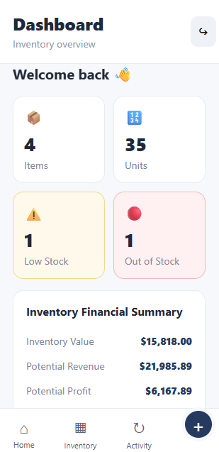

01 SOFTWARE ENGINEERINGInventory Management App
The Inventory Management App was improved by adding transaction history, search and filtering, employee-versus-manager roles, and a dashboard summary showing important inventory information such as total items, low-stock items, and out-of-stock items. These improvements were chosen to make the original application more practical and scalable: transaction history provides better accountability by showing who made inventory changes and when, search and filtering make it easier to manage larger inventories, role-based permissions give employees and managers appropriate access, and the dashboard provides a quick overview of inventory status for better decision-making.